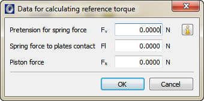

|
|
|


弹簧力的定义

图55.4：弹簧力的定义
这些附加输入， 和 ，用于确定计算最终弹簧力所需的特性值。随后使用滑动摩擦系数、平均半径 rm 和板的数量来确定加速扭矩。
然后使用从 的静摩擦系数来确定保持力矩。
弹簧力预紧力根据所选系统类型（闭合或开启）作为正或负值予以考虑。
Definition of spring forces
Figure 55.4: Definition of spring forces
These additional inputs, and , are used to determine the characteristic values required to calculate the resulting spring force. The coefficient of sliding friction and the average radius rm and the number of plates are then applied to determine the accelerating torque.
The coefficient of static friction from the is then used to define the holding torque.
The spring force pretension is taken into account as a positive or negative value, depending on what kind of system has been selected (closing or opening).